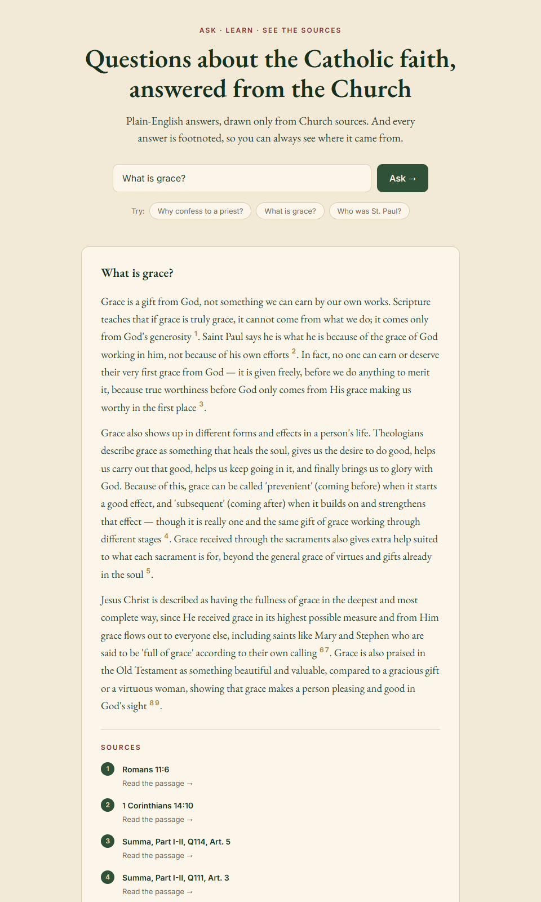

Ask a question about the Catholic faith. Get a grounded answer.
Every answer is written in plain English and footnoted straight to the Bible and Aquinas's Summa Theologica — nothing else. If the sources don't cover a question, it says so honestly instead of guessing.

Every claim traces back to a specific passage in the Bible or the Summa Theologica — no unsourced answers.
If the sources don't cover your question, it tells you that plainly instead of making something up.
Answers are written to be easy to follow, no theology degree required.